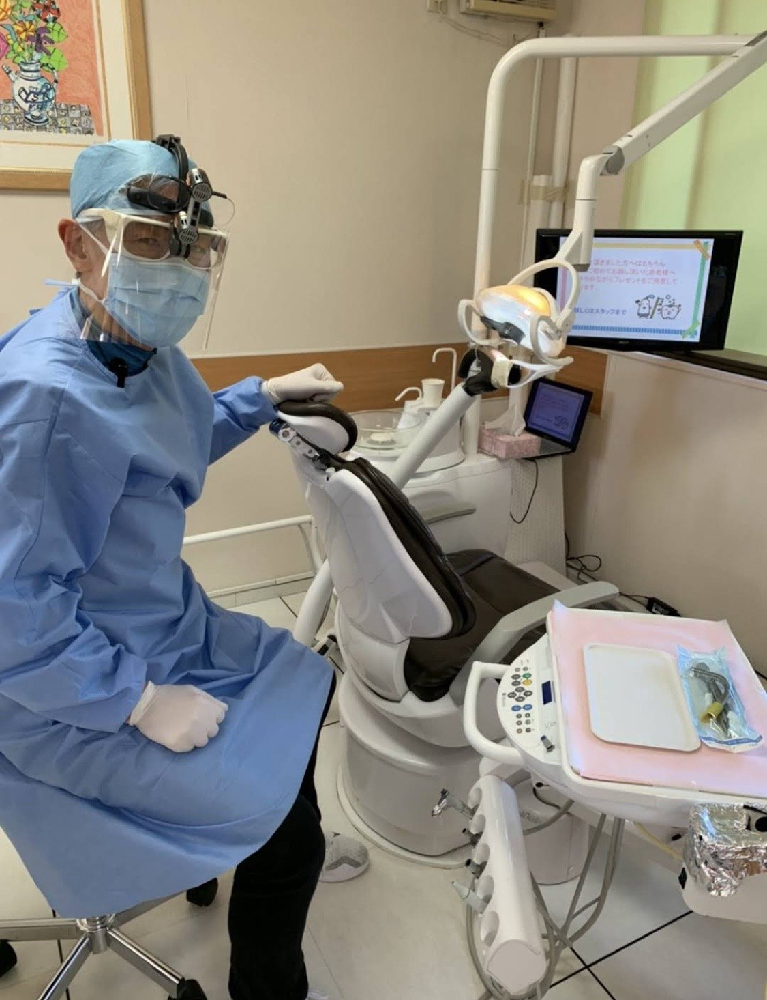
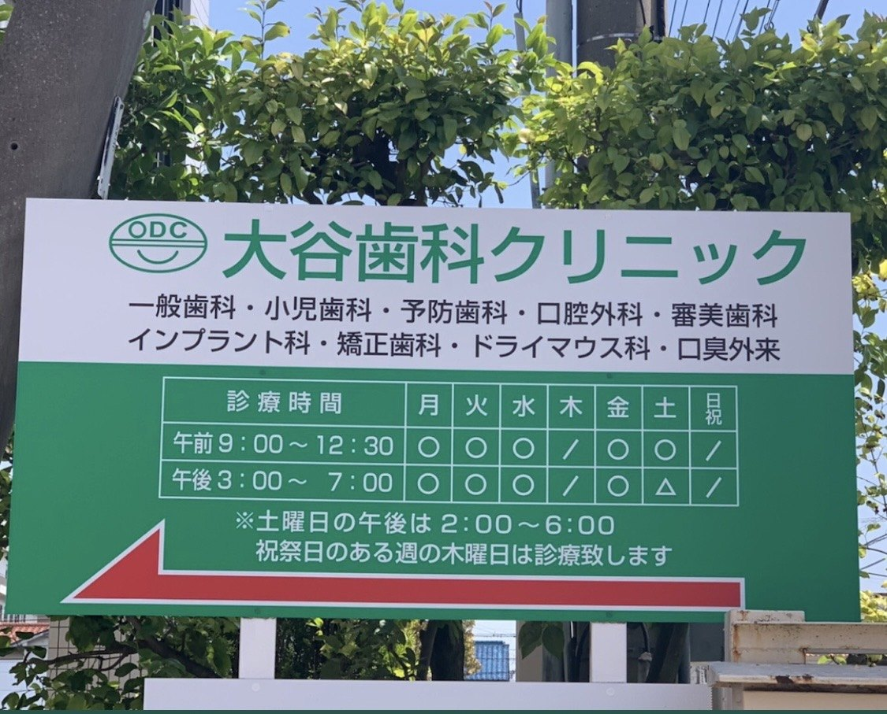

01
地域に根ざして40年以上
お子さまからご高齢の方まで、地域の皆さまに支えられて診療を続けています。
地域に根ざして40年以上
大谷歯科クリニックは、長年培ってきた経験と信頼を大切にしながら、CTや口腔内スキャナーなどの新しい設備も取り入れている歯科医院です。
まずは相談だけでも大丈夫です。WEB予約は医院からの確認連絡をもって予約確定となります。


OUR STORY
医院には長く地域で診療を続けてきた歴史があります。その分、患者さまとの信頼関係や診療技術を大切にしています。
一方で、CTや口腔内スキャナーなど、新しい設備や考え方も積極的に取り入れています。「昔からある安心感」と「新しい歯科医療」の両方を大切にする医院です。
REASONS
患者さまが安心して一歩踏み出せるよう、通いやすさ・設備・説明を大切にしています。
お子さまからご高齢の方まで、地域の皆さまに支えられて診療を続けています。

顎の骨や神経の位置を立体的に確認し、より安全で精密な診断につなげます。

小型カメラでお口の中をスキャン。型取りが苦手な方の負担軽減にもつながります。

親知らず、お口のできもの、顎まわりのお悩みなどもお気軽にご相談ください。

小児歯科・予防歯科にも対応し、ご家族みんなで相談しやすい医院づくりを心がけています。

治療前にお口の状態や治療内容をできるだけ丁寧に説明します。
SYMPTOMS
どの診療を選べばよいか分からない方も、まずは気になる症状からご相談ください。
DIGITAL DENTISTRY
従来の粘土のような型取りが苦手な方にも配慮し、小型カメラでお口の中を撮影するデジタル型取りに対応しています。
TREATMENT
地域の歯科医院として、幅広いお口のお悩みに対応します。
DOCTOR
地域の皆さまのお口の健康を支えるため、長年培った経験と新しい技術の両方を大切にしています。患者さま一人ひとりに寄り添い、安心して通っていただける歯科医院を目指しています。
医院紹介を見るCT、口腔内スキャナー、インプラント、口腔外科、医院の日常などを発信しています。
GALLERY
来院前に医院の雰囲気が分かるよう、写真を多めに掲載しています。



RECRUIT
地域に愛され続けて40年以上。長年培われた技術や患者対応を学びながら、CTや口腔内スキャナーなどの新しい設備にも触れられる環境です。
歯科衛生士・歯科助手・受付スタッフを募集しています。まずは見学だけでも歓迎です。
採用情報を見る